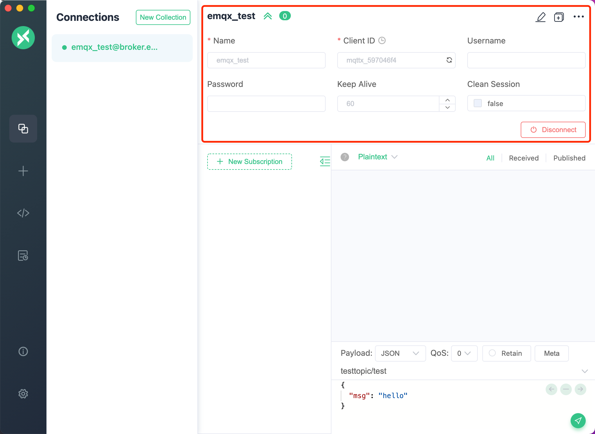
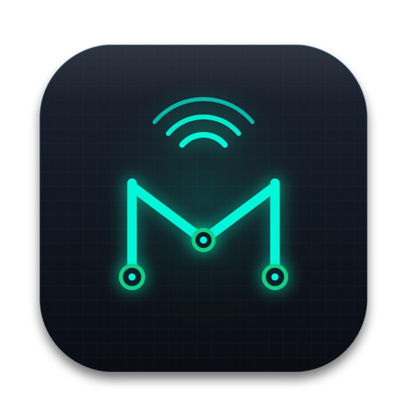
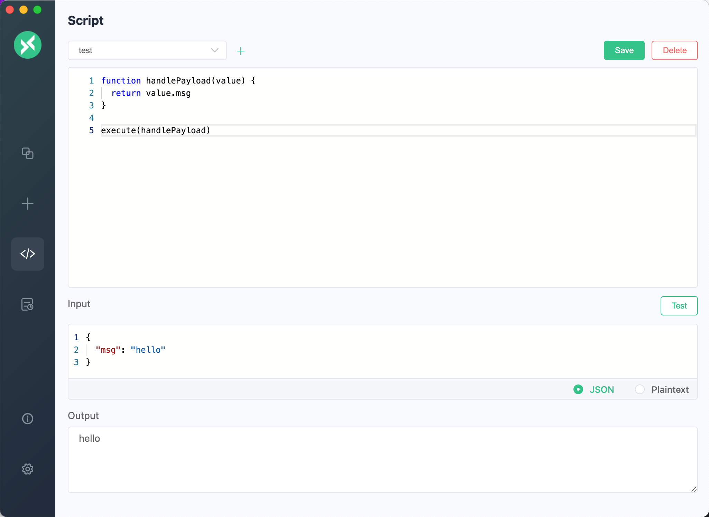
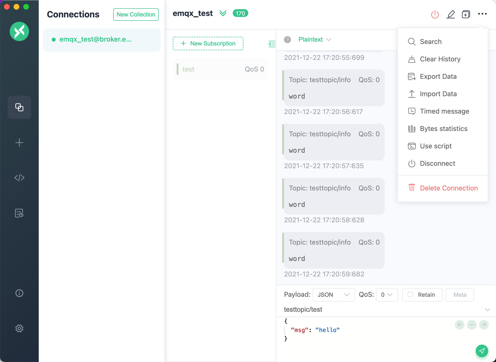
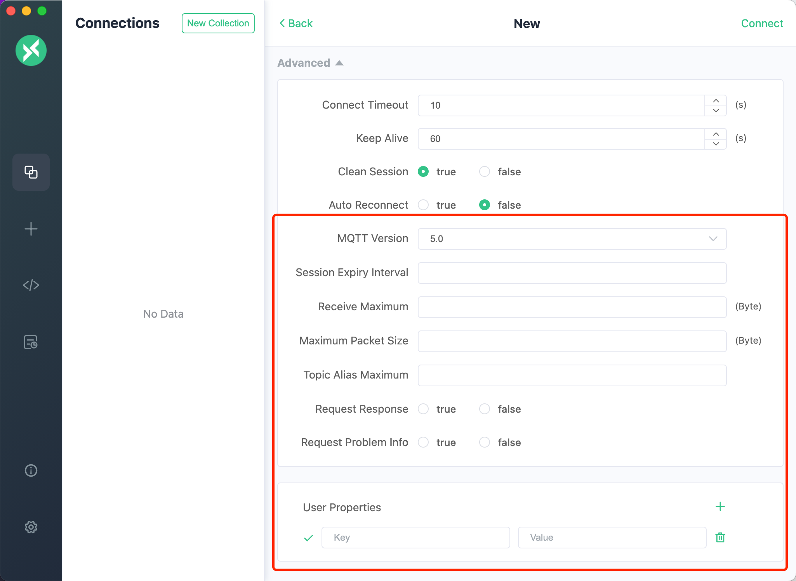
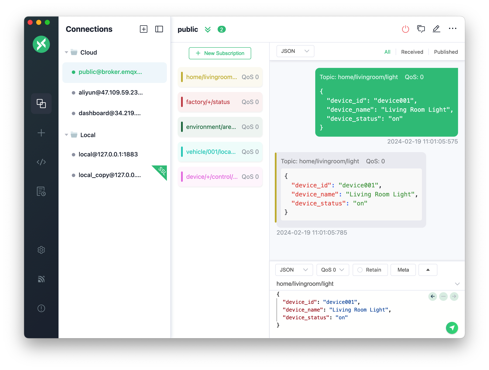

01 / 05
Topic-Scoped Isolation
Click any active subscription to instantly focus the feed on that exact topic. Outgoing requests and incoming responses stay paired together without cross-device clutter.
Zero Message Noise

Cross-Platform MQTT 5.0
The next-generation MQTT 5.0 desktop client.
Topic-scoped isolation, dynamic action resolution, and payload collections—built for real IoT workflows.
Eliminate message noise and misdirected publish commands.

01 / 05
Click any active subscription to instantly focus the feed on that exact topic. Outgoing requests and incoming responses stay paired together without cross-device clutter.
Zero Message Noise
02 / 05
Subscribe to wildcard device streams (device/#) and publish to relative action routes like reqcfg or ${base}/status. Target topics resolve on the fly without re-typing serial numbers.

03 / 05
Save request bodies, QoS configurations, and custom action subtopics into an organized library. Switch between devices and dispatch command payloads with a single click.
Instant Keyboard Shortcut
04 / 05
Comprehensive support for modern broker specifications: User Properties, Correlation Data, Response Topics, Subscription Identifiers, Reason Codes, and Will Messages.
Enterprise Ready
05 / 05
Inspect payloads in JSON, Plaintext, Hex, Base64, and CBOR. Real-time syntax tree rendering, automatic formatting, and context-menu copying for high-speed debugging.
Deep InspectionFree, open-source, and available across all major operating systems.